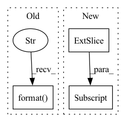

Pattern ID :41959
Before Change
// plot the mask and the transformed image according to estimated homography
axis9.imshow(mask_batch1[nbr, :, :], vmin=0, vmax=1)
axis9.set_title("mask for backpropagation, sum {}".format( np.sum(mask_batch1[nbr, :, :])) )
im10 = axis10.imshow(
cv2.warpPerspective(image1[nbr, :, :], metrics_per_image["{}".format(nbr)]After Change
metrics_per_image["{}".format(nbr)]["nbr_kp1"],
metrics_per_image["{}".format(nbr)]["total_nbr_kp_reward1"]), fontsize="medium")
im6 = axis6.imshow(image2[nbr, :, :] , cmap="gray", origin="upper", vmin=0.0, vmax=255.0)
axis6.scatter(metrics_per_image["{}".format(nbr)]["to_plot"]["keypoints_map2"][1],
metrics_per_image["{}".format(nbr)]["to_plot"]["keypoints_map2"][0], s=2,
color="green")In pattern: SUPERPATTERN
Frequency: 3
Non-data size: 3
Instances Fragment ID: 117547632
Project Name: prunetruong/glampoints_pytorch
Commit Name: 5b860576ff1326eb4cf9d39059299def5766979f
Time: 2020-03-11
Author: truongp@ethz.ch
File Name: utils_training/utils_CNN.py
M Class Name: AnonimousClass
N Class Name: AnonimousClass
M Method Name: plot_training(11)
N Method Name: plot_training(11)
M Parent Class:
N Parent Class:
M File Name: utils_training/utils_CNN.py
N File Name: utils_training/utils_CNN.py
M Start Line: 61
M End Line: 132
N Start Line: 63
N End Line: 122
Before Change
// plot the mask and the transformed image according to estimated homography
axis9.imshow(mask_batch1[nbr, :, :], vmin=0, vmax=1)
axis9.set_title("mask for backpropagation, sum {}".format( np.sum(mask_batch1[nbr, :, :])) )
im10 = axis10.imshow(
cv2.warpPerspective(image1[nbr, :, :], metrics_per_image["{}".format(nbr)]After Change
metrics_per_image["{}".format(nbr)]["nbr_kp1"],
metrics_per_image["{}".format(nbr)]["total_nbr_kp_reward1"]), fontsize="medium")
im6 = axis6.imshow(image2[nbr, :, :] , cmap="gray", origin="upper", vmin=0.0, vmax=255.0)
axis6.scatter(metrics_per_image["{}".format(nbr)]["to_plot"]["keypoints_map2"][1],
metrics_per_image["{}".format(nbr)]["to_plot"]["keypoints_map2"][0], s=2,
color="green") Fragment ID: 117547629
Project Name: prunetruong/glampoints_pytorch
Commit Name: f38355011986da618fd83be6317501d483c3b598
Time: 2020-03-11
Author: truongp@ethz.ch
File Name: utils_training/utils_CNN.py
M Class Name: AnonimousClass
N Class Name: AnonimousClass
M Method Name: plot_training(11)
N Method Name: plot_training(11)
M Parent Class:
N Parent Class:
M File Name: utils_training/utils_CNN.py
N File Name: utils_training/utils_CNN.py
M Start Line: 61
M End Line: 132
N Start Line: 63
N End Line: 122
Before Change
Parametrizes the T_B St(n,k) in terms of the lower triangle of ``x``
if x.ndimension() != 2:
raise ValueError("Expected a matrix. Got a {}-dimensional tensor."
.format( x.ndimension()) )
if self.inverted:
x = x.t()
After Change
def frame(self, x, base):
if self.inverted:
x = x.t()
low = x[:, :self.n//2] .tril(-1)
up = x[:, :self.n//2 + self.n%2].triu(1)
// Compute the reflection of low
low = low.flip(-1).flip(-2) Fragment ID: 117547631
Project Name: lezcano/geotorch
Commit Name: ada013178cb25a391184cd6ffcd920ccc2109e69
Time: 2020-03-11
Author: lezcano-93@hotmail.com
File Name: mantorch/orthogonal.py
M Class Name: Stiefel
N Class Name: Stiefel
M Method Name: frame(3)
N Method Name: frame(3)
M Parent Class: SO
N Parent Class: BaseManifold
M File Name: mantorch/orthogonal.py
N File Name: mantorch/orthogonal.py
M Start Line: 144
M End Line: 167
N Start Line: 95
N End Line: 102